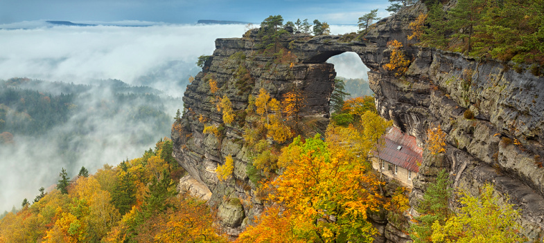
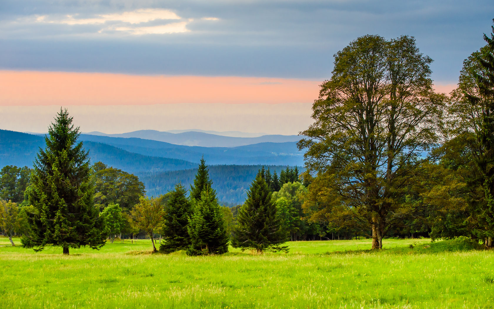
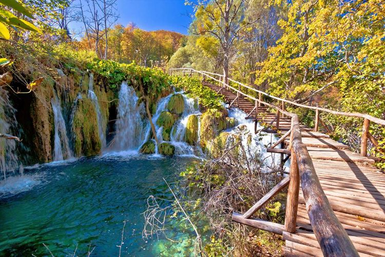
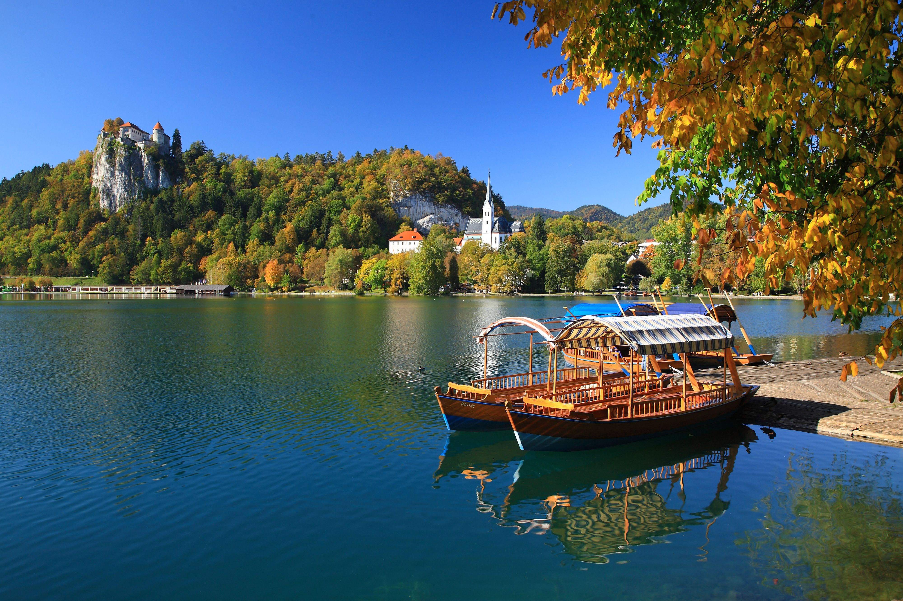
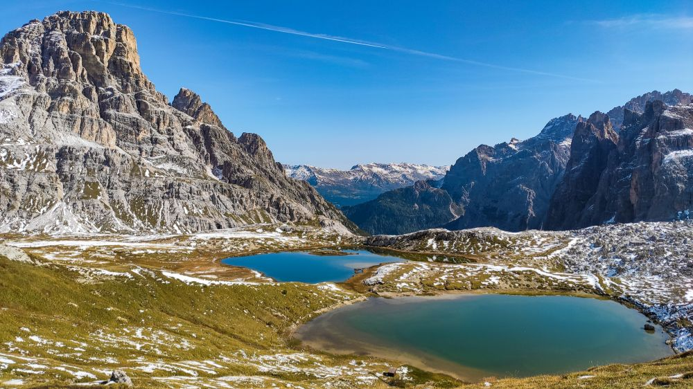
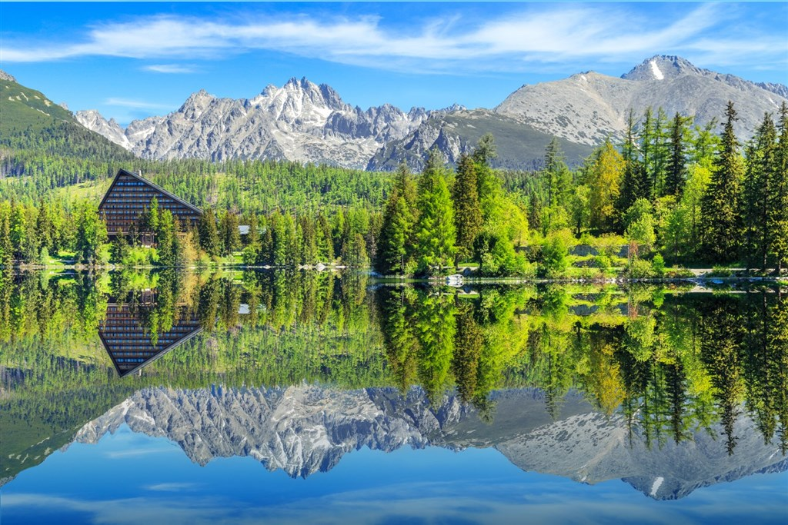
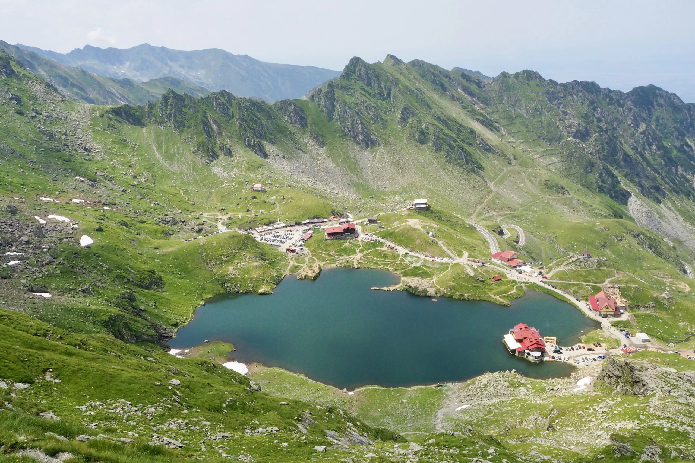
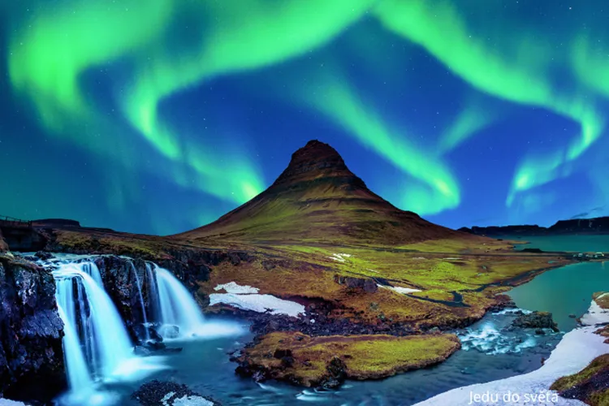
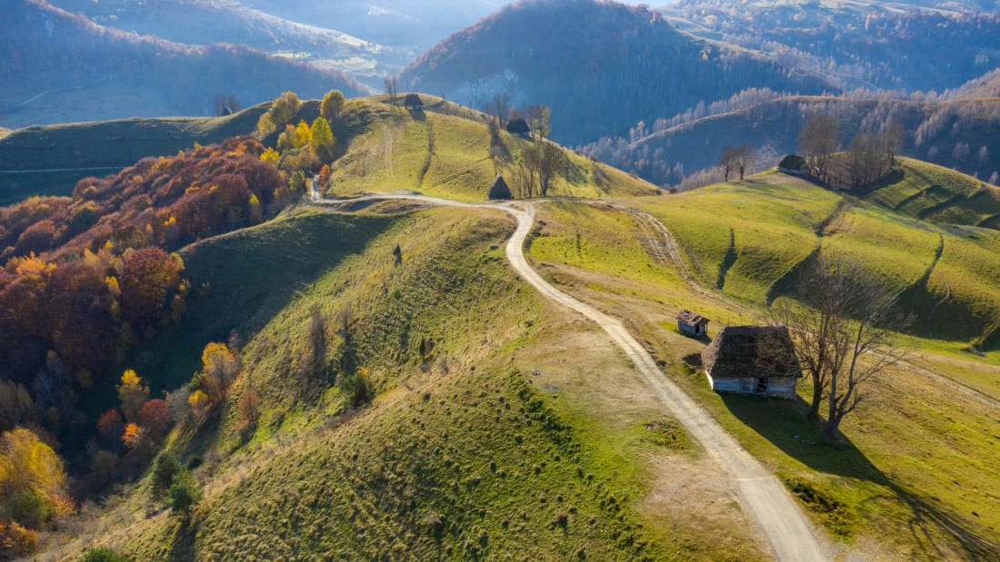

České Švýcarsko
Skalní města, lesy a vyhlídky dělají z tohoto místa ideální letní destinaci pro turistiku a focení.

Šumava
Rozsáhlá příroda s jezery, rašeliništi a klidnými stezkami vhodná pro dlouhé letní procházky.

Plitvická jezera
Kaskády tyrkysových jezer a vodopádů vytvářejí jednu z nejkrásnějších přírodních scenérií Evropy.

Bled
Jezero s ostrovem a horami v pozadí nabízí klidnou atmosféru a perfektní letní relax v přírodě.
Dolomity
Dramatické horské štíty a zelená údolí ideální pro ferraty, túry a horské dobrodružství.

Vysoké Tatry
Letní horské výstupy, ostré štíty a nádherné výhledy pro aktivní turisty i zkušené horaly.

Azorské ostrovy
Sopečná krajina, zelené kopce a oceán nabízejí unikátní mix divoké přírody a klidu.

Skotská vysočina
Drsná příroda, jezera a mlhavé kopce vytvářejí atmosféru ideální pro dobrodružné výpravy.

Patagonie
Rozsáhlá divočina s horami, ledovci a větrem, ideální pro extrémní turistiku a expedice.

Fagaras
Nejdivočejší část Karpat s ostrými hřebeny a náročnými túrami pro zkušenější dobrodruhy.

Island
Lávová pole, vodopády a geotermální oblasti dělají z Islandu letní ráj pro objevování divoké přírody.

Apuseni
Hory plné jeskyní, lesů a pastvin. Ideální pro klidnou turistiku a objevování čisté přírody.
